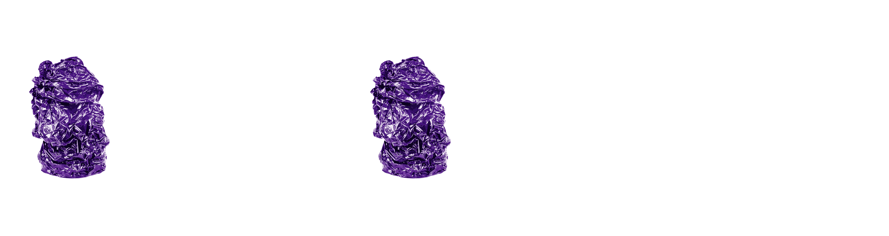
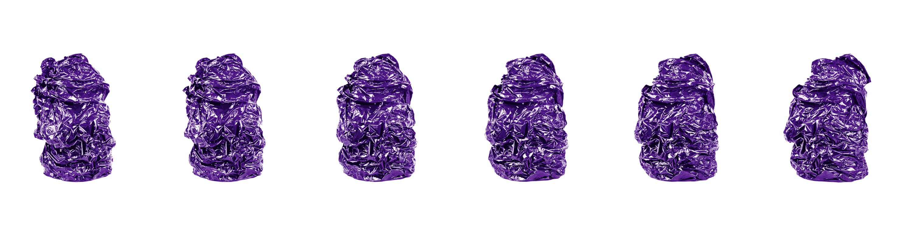

- 

- 


CONTACT
OLDER STUDIO PARIS
48 Rue Saintonge
75003 Paris
France
OLDER DENMARK
Birk Centerpark 32
7400 Herning
Denmark
For sales enquiries please contact:
sales@olderstudio.com
For press enquiries please contact:
press@marlosaalmink.com
General:
info@olderstudio.com
Careers:
jobs@olderstudio.com
ABOUT
Conversations on synergy. Our movements have become evermore swift. We travel and explore by triggering our senses irreverently. Contemporary wanderers need to be equipped with functional wardrobe necessities. Items that embrace understatement as means to develop novel expressions.
OLDER proposes timeless silhouettes, crafted carefully, with profound attention to tailoring and textural minimalism. Each garment springs from deep research and the annotation of our conceptual premises. Contemporary and intelligently functional, the collections appear sensual and embrace modern interaction.
OLDER works with provocative fabrics, innovative materials and solemn shapes. Our collections do not exist in succession, yet are part of an ongoing assessment of sartorial femininity.